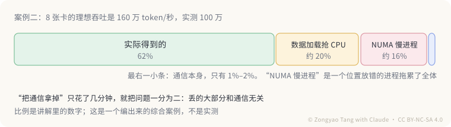
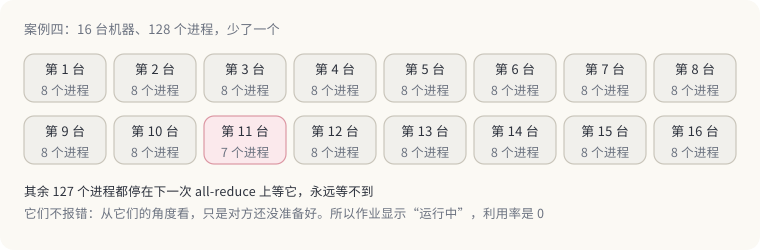

这一单元不讲新知识，而是把前面的知识用起来。线索是：先重温排查的三条原则（问它在等什么、先算上限、一次改一处）→ 然后走四个案例，从单卡到多机、从“慢”到“挂”，每个案例都按同样的顺序推进，并标出每一步用到的是哪个单元。读案例时，试着在看下一步之前自己先想：现在该查什么。最后的动手项目是可选的，适合第二遍学习时做。
第 11 部分 · 结业项目11.1 结业项目
这一单元回答能不能独立走完一次“测量 → 分析 → 优化 → 验证”的完整循环？
把整门课串起来：每一步都用得上前面某个单元的原理。
- 先问“它在等什么”，再选手段
- 先算出理论上限，才知道还差多远
- 一次只改一处，每次都留下数据
- 案例一：单卡训练，GPU 利用率只有四成
- 案例二：8 张卡只有 5 倍的速度
- 案例三：换了一批机器，多机训练慢了三倍
- 案例四：训练跑到半夜不动了
讲解
1先问“它在等什么”，再选手段
整门课可以收成一张表：算力受限 → Tensor Core、低精度；带宽受限 → 融合、分块、量化；开销受限 → torch.compile、CUDA Graphs、fused 优化器；通信受限 → 分桶重叠、调整并行方式；显存受限 → ZeRO/FSDP、重算、KV cache 管理。
把整门课收成一张表。左边是 0.1 里的四种“等”，再加上显存不够这一种情况；右边是对应的手段和讲它的单元。
GPU 在等什么 怎么认出来 手段 单元 数据 利用率锯齿；喂固定 batch 后吞吐大涨 加 worker、锁页加异步拷贝、预处理提前做 2.4、7.4 发令（开销） 加倍 batch 时间几乎不变；CPU 时间远大于 GPU 时间 加大 batch、torch.compile、CUDA Graph、fused 优化器、去掉同步点 2.3、2.5、2.6、3.6 计算：算力 GPU 满载，时间集中在矩阵乘法 低精度和 Tensor Core、维度凑整 1.5、2.6、4.5 计算：带宽 GPU 满载，时间在逐元素的小算子或注意力的读写上 融合、Flash Attention、量化 4.2、4.4、9.2 别的卡（通信） 单卡正常，多卡扩展效率低 分桶重叠、查通信的路、调整并行方式的层次 第 5–7 部分 显存不够 OOM，或者 batch 开不大 分清五笔账；ZeRO/FSDP、重算、KV cache 管理 2.1、7.2、9.1 怎么用这张表。 拿到问题先别想“我知道哪些优化手段”，而是先问“它现在在等什么”。左边的判断做对了，右边的选项自然就只剩两三个。
最常见的弯路就是跳过左边：听说 torch.compile 能加速就打开它，听说混合精度好就换上它，然后发现没变化。没变化不是这些手段不好，而是它们对付的不是你的瓶颈。
瓶颈会移动。 解决了一个，下一个就浮出来（0.1 的第一个思想）。所以这张表不是查一次就完，而是一个循环：量、判断、改、再量。每一轮的“在等什么”可能都不一样。下面的案例一会展示这一点：同一个训练任务，先后遇到了三种不同的“等”。

这张表怎么用：它是一个循环，不是查一次就完 打个比方像看病：先诊断，再开药。症状相同的病，病因可能完全不同。
所以项目里的每一项优化，都要先用 profiler 和估算说明瓶颈是哪一类，再说明选这个手段的理由。
- 知道了在等什么，还需要知道“改好之后应该是什么样”。
2先算出理论上限，才知道还差多远
用 6N 估算训练的运算量，用“权重字节数 ÷ 带宽”估算生成速度，用“2 × 数据量 ÷ 带宽”估算 all-reduce 时间。实测值和理论值一比，就知道还剩多少空间。
没有预期，测出来的数字就没有意义。“每秒 9 万 token”是好是坏？“all-reduce 的 busbw 是 20 GB/s”正常吗？要先有一个“应该是多少”，才能判断差距有多大、值不值得查。
课程里的几把尺子。
要估的 估算 单元 训练的运算量 每个 token 约 6N 次浮点运算 1.5 训练吞吐的上限 硬件峰值算力 ÷ 6N；实测 ÷ 上限 = MFU 0.2 单用户生成速度的上限 显存带宽 ÷ 模型权重的字节数 4.1 模型状态占的显存 混合精度加 Adam：每个参数 16 字节 7.2 KV cache 的大小 2 × 层数 × 隐藏维度 × 序列长度 × 字节数 4.1、9.1 一次 all-reduce 的时间 约 2 × 数据量 ÷ 链路带宽，外加步数 × 固定延迟 6.1 通信带宽的预期 机内看 NVLink，跨机看网卡 5.1、6.3 主内存到显存的拷贝 数据量 ÷ PCIe 带宽 5.1 检查点的间隔 √(2 × 存一次的时间 × 平均故障间隔) 7.4 这些估算都很粗，误差可以有两三成。它们的用处不是给出精确的数，而是区分三种情况：
- 差一两成：已经接近上限。继续在这里优化，投入大、回报小。该换一个瓶颈去看，或者接受现状。
- 差一倍左右：有一个具体的因素没到位（少用了一半的资源、多了一次拷贝、某一段没有重叠）。值得找。
- 差一个量级：有根本性的问题，路走错了（退回了 TCP、数据加载完全串行、没用上 GPU 的某种能力）。通常也最好找，因为差距太明显。
估算还能提前否决不可行的计划。 “用 8 张卡在一周内训完这个模型”：6N 乘以 token 数除以 8 张卡的算力，如果算出来 MFU 要达到 150% 才行，这个计划在动手之前就可以改了。
养成习惯：做任何测量之前，先在纸上写下你预期的数。测出来和预期差得远，要么是系统有问题，要么是你的理解有问题。两种情况都值得弄清楚。
打个比方像跑步：知道自己的极限配速，才知道今天跑得好不好、还值不值得再练。
所以离上限只差一两成时，就该停下来换一个瓶颈去攻；还差好几倍时，往往是某个基本问题没解决。
- 有了方向和预期，剩下的是做事的纪律。
3一次只改一处，每次都留下数据
每次只改一个变量，记录改动前后的吞吐、显存和误差；把结果写进笔记，让学习助手帮你检查推理是否站得住。
为什么只改一处。 性能问题的变量极多：batch 大小、精度、编译、worker 数、几十个环境变量、驱动和库的版本。同时改了三样、吞吐提高了 20%，你不知道：
- 是哪一样起的作用；
- 是不是其中一样提高了 40%、另一样拖累了 20%；
- 下次换一个环境，该保留哪一样。
更糟的是结果变差的时候：三样里是哪一样坏了事，只能退回去一样一样重试，比一开始就逐个来更费时间。
一次合格的记录。
- 改了什么（只有一样）。
- 改之前和改之后的四个数（0.2）：吞吐、MFU、峰值显存、模型效果。
- 测量的条件：跳过了多少步预热、测了多少步、波动有多大。
- 环境：硬件、软件版本、关键的设置。
- 你的解释：为什么会有这个变化，对应课程里的哪条原理。
最后一条最容易被省略，也最有价值。写不出解释的提升是靠不住的：它可能是测量的波动，也可能依赖某个你没意识到的条件，换个环境就消失了。
还要验证没有算错。 4.1 立过规矩：每次优化都和“对的版本”比。在训练的层面，就是对照损失曲线（1.3）：改完之后，曲线应该和改之前基本重合。吞吐提高了而损失曲线变差，不是优化，是换了一个问题。
把记录留在看得见的地方。 这个应用的笔记就是做这件事的：每个单元的笔记里记下你在自己环境里测到的数（比如 6.3 建议的通信基线）。下一次训练变慢时，重测一遍和笔记比，几分钟就能知道是哪一段退化了。没有基线的话，同样的问题要从头查起。
对排查故障同样适用。 6.3 讲的分层排除、5.3 讲的对半排除，都是“一次只改变一个条件”的系统化做法。遇到问题时最自然的冲动是同时试好几个可能的修复，然后问题“好了”，却不知道为什么好了。它下次再出现时，你还是不知道。
打个比方像做实验：同时改三个条件，结果变好了也不知道是哪个起的作用。
所以报告里的每个结论都要有前后对比的数字，并能对应到课程里的一个单元。
后面会用到 案例一：单卡训练，GPU 利用率只有四成- 三条原则讲完了。下面用四个案例把它们走一遍。第一个最常见，也最能说明“瓶颈会移动”。
4案例一：单卡训练，GPU 利用率只有四成
一个中等大小的模型在一张卡上训练，nvidia-smi 显示利用率在 40% 上下。按“先量、再拆、找最大的一段”走下来，先后发现并解决了三个不同的瓶颈：数据加载、每一步的同步点、算子太碎。每解决一个，下一个才显现出来。
现象。 一个 1 亿参数左右的 Transformer，batch 64，一张 A100。
nvidia-smi的利用率在 30%–50% 之间跳动，吞吐每秒 4 万 token。第零步：先有预期和基线（0.2）。 按 6N 估算，这张卡的理论上限在每秒几十万 token 的量级。实测只有上限的一成左右：差一个量级，说明有根本性的问题，而不是需要微调。记下基线：吞吐、峰值显存、前 200 步的损失曲线。
第一步：看利用率的形状（0.2）。 每秒采样一次，看到明显的锯齿：一两秒接近 100%，接着一两秒很低。锯齿指向“等数据”。
第二步：验证（2.4）。 取一个 batch 反复喂，不读新数据。吞吐从 4 万跳到 7 万。确认数据加载是瓶颈，而且知道了去掉它之后的上限是 7 万。
检查 DataLoader：
num_workers=0。分词还放在__getitem__里。两处都改：分词提前做好存成文件（2.4 的最后一节），worker 数设为 8，打开pin_memory和non_blocking。重新量：吞吐 6 万。锯齿消失了，但利用率稳定在 70% 左右，离“固定 batch”的 7 万还差一截，离理论上限更远。
第三步：把一步的时间拆开（0.2）。 用 profiler 采几步。发现每一步的末尾 CPU 上有一段几毫秒的等待，对应
aten::item。训练循环里每一步都loss.item()并写日志。这是一个同步点（3.6）：CPU 每一步都停下来等 GPU 清空队列。改成在 GPU 上累加、每 50 步取一次值。重新量：吞吐 6.8 万，接近固定 batch 的水平。数据和同步点都不再是问题。
第四步：现在在等什么。 利用率 80% 多，不再是锯齿，而是稳定的中等偏高。profiler 的总计：CPU 时间和墙上时间差不多，GPU 时间只有它的七成。时间线上 GPU 那一行是大量很短的小块。做加倍 batch 的测试（2.3）：batch 从 64 到 128，每步的时间只增加了 30%。这是“等发令”：模型不大，算子很碎，CPU 发不过来。
两个手段：把 batch 加到 128（显存允许）；打开
torch.compile（2.5）。先做第一个，吞吐 10 万；再做第二个，跳过编译的几十秒后稳定在 13 万。用TORCH_LOGS=graph_breaks确认热点路径上没有图断点。第五步：再看一次。 利用率 95% 以上。profiler 显示 GPU 时间的大头在矩阵乘法上。这时才轮到“算力”：确认混合精度是否打开（2.6）。没有。打开 bf16 的 autocast：吞吐 20 万。
算一下 MFU：6 × 10⁸ × 2×10⁵ = 1.2×10¹⁴，约 120 TFLOPS，除以 312，约 38%。对这个大小的模型已经是不错的水平，可以停了。
每一步都对照了损失曲线（1.3）：改 batch 时相应调整了学习率，其余的改动前后曲线重合。
回顾。 吞吐从 4 万到 20 万，经过了五次改动，对应四类不同的瓶颈：数据（2.4）、同步点（3.6）、发令开销（2.3、2.5）、算力（2.6）。如果一上来就打开混合精度，吞吐几乎不会变，因为当时 GPU 六成的时间在等数据。顺序是由测量决定的，不是由“哪个手段听起来厉害”决定的。

起点、终点和中间遇到的四类瓶颈 打个比方像疏通一条有好几处淤塞的水渠：清掉最上游的一处，水流到下一处又慢了下来。得一处一处地来，而且每清一处都要重新看水流到了哪里。
所以不要指望一次改动解决所有问题，也不要在第一次改动收效不大时就认定方向错了。瓶颈是一层一层浮出来的。
承接 一次只改一处，每次都留下数据最省事的优化：能提前做的预处理，就不要留到训练时做同步点：只要 CPU 需要 GPU 上的一个具体的值，它就得停下来等这条路每次要花若干微秒；模型小、算子碎时，它就成了瓶颈编译对付的是开销和带宽，不是算力autocast：算子调用的路上多了一站，按算子的类型决定用什么精度把一步的时间拆开：每一段各占多少后面会用到 案例二：8 张卡只有 5 倍的速度- 单卡调好了，搬到多卡。这是工作中最可能遇到的场景。
5案例二：8 张卡只有 5 倍的速度
单卡已经调好的训练搬到一台 8 卡机器上，吞吐只有单卡的 5 倍，扩展效率 62%。排查发现损失来自两处：8 个进程的数据加载在抢 CPU，以及一张卡因为被放在了错误的 NUMA 一侧而拖慢了全体。通信本身没有问题。
现象。 案例一的训练，单卡每秒 20 万 token。放到同一台机器的 8 张卡上用 DDP，每卡的 batch 不变，总吞吐 100 万。理想是 160 万，效率 62%。
第一步：把通信拿掉（7.1 的排查）。 8 个进程各自独立训练，不同步梯度。每个进程每秒 16 万，而不是 20 万。还没有任何通信，就已经丢了两成。问题至少有一部分和通信无关。
看 CPU：机器有 64 个核，8 个进程每个开了 8 个 worker，再加上各自的主线程和锁页线程，核已经全部占满。回到 2.4 的方法，在 8 个进程同时运行的条件下重新扫 worker 数。因为分词已经提前做好，数据加载很轻，每个进程 3 个 worker 就够了。改完后，独立运行时每个进程回到 19.5 万。
第二步：加回通信，估算它该占多少（6.1、6.3）。 模型 1 亿参数，梯度按 16 位算是 0.2 GB。这台机器的
all_reduce_perf在 8 卡上测出大消息的 busbw 约 200 GB/s，换算成 algbw 约 114 GB/s。一步的梯度同步约 2 毫秒。一步的总时间约 200 毫秒。通信只占 1%，而且大部分还能和反向重叠。结论：通信不应该造成可见的损失。可是加回 DDP 之后，总吞吐是 126 万，效率 79%，比独立运行时又少了两成。这两成不像是通信本身。
第三步：找慢节点（7.1、6.3）。 给每个进程记录每一步里“等待同步”的时间。7 个进程每步等 30 多毫秒，只有 5 号卡的进程几乎不等。大家在等的是它。
单独跑 5 号卡：每秒 16.5 万，比别的卡慢。排除硬件：
nvidia-smi -q没有降频，温度正常。看nvidia-smi topo -m（5.1）：5 号卡属于第二个 NUMA 节点；再看这个进程实际跑在哪些核上：第一个 NUMA 节点。启动脚本给每个进程绑定 CPU 核时用了一个写死的列表，5 号进程被绑到了另一侧。它的数据每一步都要穿过两个 CPU 插槽之间的互联，CPU 发令也慢。修正绑定，让每个进程使用自己那张卡所在一侧的核。5 号卡单独跑回到 20 万。8 卡 DDP 的总吞吐 152 万，效率 95%。
第四步：剩下的 5% 值不值得追。 按 6.2 的原则，差一两成以内就该停了。但可以用时间线确认它是什么：反向结束后有一小段只有 all-reduce 的时间（最后一两个桶露在了外面），加上通信的通道占用了一些计算单元（6.2）。属于正常的开销。
回顾。 丢掉的 38% 里：约 20% 是数据加载抢 CPU（2.4），约 16% 是一个 NUMA 位置放错的慢进程拖累全体（5.1、7.1），通信本身只有 1%–2%。“把通信拿掉”这一步只花了几分钟，却把问题一分为二，避免了一头扎进 NCCL 的调优里。

理想的 160 万里，各部分去了哪 这个案例里用到的每个数（algbw、等待时间、NUMA 归属），都来自前面讲过的一条命令。真正起作用的是顺序。
打个比方像八个人划一条船：船速上不去，不一定是桨不好（通信），可能是有人没吃饱（数据），也可能是有一个人节奏慢了半拍，其余七个人每一桨都在等他。
所以多卡的扩展效率低，不要先怀疑通信。先把通信拿掉，看每个进程单独跑是否正常；再用估算判断通信该占多少；最后才去查通信本身。
承接 案例一：单卡训练，GPU 利用率只有四成扩展效率：多卡吞吐 ÷（单卡吞吐 × 卡数）两种带宽：algbw 是你感受到的，busbw 用来和硬件比NUMA：进程、内存和设备要放在同一侧每个参数调的是管道的哪一站后面会用到 案例三：换了一批机器，多机训练慢了三倍- 前两个案例都在一台机器内。跨机之后，多了一整层可能出问题的地方：网络。
6案例三：换了一批机器，多机训练慢了三倍
同一个作业、同样的镜像，调度到另一批节点上之后，吞吐只有原来的三分之一。单机内一切正常。沿着“链路 → 裸 RDMA → NCCL → 框架”自下而上查，发现 NCCL 在新节点上没有用上 GPUDirect RDMA，其中两个节点甚至退回了 TCP。
现象。 一个 4 台机器、32 张卡的 FSDP 作业，原来每步 1.2 秒。集群扩容后被调度到 4 台新节点上，每步 3.5 秒。代码、镜像、配置都没变。
第一步：缩小范围（6.3 的两个维度）。 在新节点上只用一台机器的 8 张卡跑：速度正常。问题只在跨机时出现。按 6.3 的分层，从下往上。
第二步：链路层（5.2）。 在 4 台新节点上运行
ibstat。端口都是 Active、LinkUp，速率和老节点一样。perfquery -x隔五分钟读两次，错误计数没有增长。物理链路没有明显问题。第三步：裸 RDMA（5.2、6.3）。 两两之间跑
ib_write_bw。用主内存做缓冲区时，带宽达到网卡的标称值。说明网络这一层是通的、够快。加上--use_cuda用显存做缓冲区：在其中两台上直接报错，无法注册显存。记下这个线索。第四步：NCCL 层（6.3）。 在新老节点上分别带
NCCL_DEBUG=INFO跑all_reduce_perf，对比初始化日志和结果。老节点：
- 日志：
Using network IB；跨机的连接是via NET/IB/…/GDRDMA。 - 大消息的 busbw 约 45 GB/s，接近网卡的带宽。
新节点：
- 其中两台的日志里有
NCCL WARN提到ibv_reg_mr failed，随后是Using network Socket。这两台退回了 TCP。 - 另外两台是
Using network IB，但跨机的连接只有via NET/IB/…，没有GDRDMA。 - 整体的 busbw 只有 3 GB/s。环上最慢的一跳决定了全体（0.1）。
问题定位到了：两个独立的原因叠在一起。
第五步：逐个解决，每次一个（6.2/one-change）。
退回 TCP 的两台。
ibv_reg_mr failed在 NCCL 文档里对应的常见原因是允许锁页的内存上限太小（6.3、5.2）。在那两台上看ulimit -l：不是 unlimited。新节点的系统镜像里漏了这项配置。修正后，这两台的日志也变成了Using network IB。重测 busbw：22 GB/s。好了很多，但只有老节点的一半。没有 GDRDMA。 回到第三步的线索，
--use_cuda报错。检查lsmod | grep nvidia_peermem（5.2）：新节点上这个模块没有加载。没有它，网卡不能直接读写显存，每一跳都要经主内存中转，两端各多一次拷贝。加载模块后，日志里出现GDRDMA，busbw 回到 45 GB/s。训练回到每步 1.2 秒。回顾。
- 两个问题都是“静默降级”（6.2 的传输层那一节）：NCCL 照常工作，没有任何报错让作业停下，只是慢。
- 两个问题都在初始化日志里写得明明白白。如果一开始就对比新老节点的日志，第四步可以直接做，前面几步是为了确认下层没有别的问题。
- 根源在节点的系统配置，不在训练代码。所以修复应该落到节点的镜像或初始化流程里，并且告诉管理集群的人，否则下一批新节点还会这样。
- 6.3 建议把通信的基线记下来。有了老节点上“busbw 45 GB/s、日志里有 GDRDMA”这条记录，这次排查的目标从一开始就很明确。
打个比方像同一辆车换了一条路线后油耗翻了三倍：车没变，司机没变，要查的是路。而且要从路面查起，不是先去调发动机。
所以“环境变了之后变慢”的问题，第一件事是看 NCCL 的初始化日志，确认它在新环境里选的路和原来一样。静默的降级不会报错，只会写在日志里。
承接 案例二：8 张卡只有 5 倍的速度NCCL 的初始化日志回答三个问题：用了哪张网、每对卡走哪条路、建了几个通道几种典型故障，各有各的指纹GPUDirect RDMA：注册的不是主内存，而是显存传输层：机内走 P2P 或共享内存，跨机走 IB verbs 或 socket后面会用到 案例四：训练跑到半夜不动了- 日志：
- 最后一个案例不是“慢”，而是“停”。它的排查线索和前三个完全不同。
7案例四：训练跑到半夜不动了
一个大作业跑了十几个小时后停止输出：没有报错，进程都还在，GPU 利用率是零。原因是一台机器上的一张 GPU 掉线，那个进程死了，其余进程在下一次集合通信处无限地等它。排查用到的是“慢”之外的另一套线索：进程是否都在、内核日志、每个进程停在哪里。
现象。 一个 16 台机器、128 张卡的作业，凌晨三点之后日志不再更新。作业的状态仍是“运行中”。
nvidia-smi显示所有卡的利用率是 0，显存仍被占着。第一步：进程是否都在（6.3 的排查）。 逐台查看训练进程。15 台上各有 8 个进程，第 11 台上只有 7 个。少了一个。
这已经解释了“挂住”：7.1 讲过，同步训练的每一步都要所有进程参与集合通信。一个进程没了，其余 127 个在下一次 all-reduce 上等它，永远等不到。它们没有报错，是因为从它们的角度看，只是对方“还没准备好”。

少一个进程，其余的全在等 （经过足够长的时间，RDMA 连接的重试会耗尽，NCCL 可能报出超时错误，6.3 讲过那两个超时参数。这个作业的超时设得很长，所以一直挂着。）
第二步：那个进程为什么没了。 看第 11 台的内核日志：
sudo dmesg -T | grep -i -E "xid|oom|killed"
找到一条凌晨三点零二分的 Xid 记录，编号 79。5.1 讲过：GPU 从总线上掉线。那张卡在硬件层面出了故障，驱动把使用它的进程终止了。
这一步也可能看到别的结果，各自指向不同的原因：
- 没有 Xid，但有“Out of memory: Killed process”：主内存耗尽，系统杀掉了进程。常见于数据加载的 worker 内存缓慢增长。
- 进程的输出里有 Python 的异常：某一步的数据有问题，或者显存不足（2.1）。
- 所有进程都在，没有任何报错：用
py-spy dump看每个进程停在哪。都停在集合通信里而网络计数器异常，查网络（5.2、5.3）；一个进程停在别处（比如卡在读数据），查它。
第三步：恢复。
- 把出故障的节点报告给管理集群的人，并让调度系统避开它。
- 终止挂住的作业，在健康的节点上重新提交，从最近的检查点恢复（7.4）。
这个作业每 30 分钟存一次检查点，最近的一次在两点四十。硬件故障本身只损失了 22 分钟的进度。但作业从三点挂到早上八点才被人发现，白白空转了五个小时，占着 128 张卡。这才是真正的损失。
第四步：怎样让下次的损失更小。
- 让“挂住”变成“退出”。 任何一个进程异常退出时，整个作业应该立刻被终止，而不是让其余进程等下去。由启动器或调度系统负责做到这一点（第 8 部分会讲作业级的失败策略）。
- 自动重启。 作业失败后由调度系统自动从检查点重新提交，不需要等人醒来。
- 监控进度，而不是监控状态。 “作业在运行”不说明任何问题。要监控的是“最近 N 分钟内步数有没有增加”。
- 检查点的间隔。 用 7.4 的公式核对：128 张卡的作业，如果这类故障平均一两天一次，30 分钟的间隔是合理的。
回顾。 这类问题的排查顺序是：进程是否都在 → 内核日志 → 每个进程停在哪。和性能问题的“先量、再拆”不同，但精神一致：先收集事实，再下结论。
它也是 7.4 那句话的实例：在大规模上，故障是常态。系统要做的不是避免它，而是让它发生时自动处理、损失很小。
打个比方像一场接力赛里有一棒选手中途退赛，却没人通知其他人：下一棒一直伸着手在原地等，比赛就这样无声无息地停了。
所以遇到“挂住”，先别看训练代码，先确认所有进程是否还活着，再看内核日志里有没有硬件报错。然后才是重启：有检查点的话，损失的只是上次存档之后的进度。
串起来
所有的案例走的是同一条路：先量，建立基线和预期；再拆，把时间或问题分到管道的各段、系统的各层；找最大的一段，判断它属于四种“等”里的哪一种；只改一处，重新量。变化的只是每一步用什么工具。能独立走完这个循环，这门课的目的就达到了。
考考自己
不看讲解，用自己的话讲一遍。
- 面对一个性能问题，第一个要回答的问题是什么？五类瓶颈各对应哪些手段？
- 为什么排查之前要先估算理论上限？课程里给出了哪几个可以直接用的估算？
- 为什么排查和优化时要“一次只改一处”？一次合格的记录应该包含什么？
- 单卡训练的 GPU 利用率偏低时，按什么顺序排查？这个案例里先后出现了哪三种瓶颈？
- 多卡扩展效率低时，怎样区分是通信的问题、数据的问题，还是某个慢进程的问题？
- 多机训练在更换节点后明显变慢，应该按什么顺序排查？NCCL 的日志里要对比哪些信息？
- 分布式训练中途卡住、没有报错时，应该先查什么？这类问题怎样预防和减少损失？
术语
- benchmark
- 基准测试
- bottleneck
- 瓶颈
- root cause
- 根本原因
- regression
- 性能退化